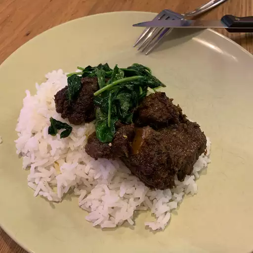

Rendang

Description
Ingridients
- 2 ½ pounds beef chuck
- 4 shallots, sliced
- 6 cloves garlic
- 1 (1 1/2 inch) piece ginger, peeled and sliced
- 1 ½ inch piece galangal, peeled and sliced
- 2 serrano chile peppers - stemmed, seeded, and sliced
- 1 Fresno chile pepper - stemmed, seeded, and sliced
- 1 tablespoon Korean red pepper flakes
- 1 teaspoon ground coriander
- ½ teaspoon ground turmeric
- ⅛ teaspoon ground cardamom
- ⅛ teaspoon freshly grated nutmeg
- 2 tablespoons vegetable oil
- 1 (14 ounce) can full-fat coconut milk
- 2 teaspoons tamarind paste
- 1 tablespoon brown sugar
- ½ stalk lemongrass, light part